Discovery of Spatial Ecotypes from a Single Sample
Source:vignettes/SingleSample.Rmd
SingleSample.RmdOverview
In this tutorial, we will illustrate how to perform de novo discovery of spatial ecotypes from single-cell spatial transcriptomics dataset using SpatialEcoTyper.
We will be analyzing single-cell spatial transcriptomics data from a
melanoma sample (raw data available in Vizgen’s MERSCOPE FFPE
Human Immuno-oncology). To quickly demonstrate how SpatialEcoTyper works,
we’ve selected a subset of the sample, which can be downloaded from here.
This demo data comprises the spatial expression of 500 genes across 27,907 cells, which are categorized into ten distinct cell types: B cells, CD4+ T cells, CD8+ T cells, NK cells, plasma cells, macrophages, dendritic cells (DC), fibroblasts, endothelial cells, and melanoma cells. Melanoma cells are excluded from this demonstration to reduce processing time.
All cells are grouped into four spatial regions: tumor, inner margin, outer margin, and stroma. The tumor and stroma regions are defined based on the density of cancer cells, as described in the CytoSPACE paper. The inner and outer margins are defined as regions extending 250 μm inside and outside the tumor boundaries, respectively. Furthermore, we quantified each cell’s distance to the tumor–stroma interface by calculating the shortest Euclidean distance to the nearest tumor region (for stromal cells) or stromal region (for tumor cells). A positive distance indicates cells located within the tumor region, while a negative distance indicates cells located within the stroma.
SpatialEcoTyper analysis requires two input data:
- gene expression matrix: rows represent gene names and columns represent cell IDs
- meta data: a data frame with at least three columns, including “X” (X-coordinate), “Y” (Y-coordinate), and “CellType” (the cell type annotation). The row names of the meta data should match the column names (cell IDs) in the expression matrix.
First load required packages for this vignette
suppressPackageStartupMessages(library(dplyr))
suppressPackageStartupMessages(library(ggplot2))
suppressPackageStartupMessages(library(parallel))
suppressPackageStartupMessages(library(Seurat))
suppressPackageStartupMessages(library(data.table))
suppressPackageStartupMessages(library(googledrive))
suppressPackageStartupMessages(library(R.utils))
library(SpatialEcoTyper)Quick start
## Download an example data for the analysis
drive_deauth() # Disable Google sign-in requirement
drive_download(as_id("13Rc5Rsu8jbnEYYfUse-xQ7ges51LcI7n"), "HumanMelanomaPatient1_subset_counts.tsv.gz", overwrite = TRUE)
drive_download(as_id("12xcZNhpT-xbhcG8kX1QAdTeM9TKeFAUW"), "HumanMelanomaPatient1_subset_scmeta.tsv", overwrite = TRUE)
## Load the gene expression matrix
scdata <- fread("HumanMelanomaPatient1_subset_counts.tsv.gz",
sep = "\t",header = TRUE, data.table = FALSE)
rownames(scdata) <- scdata[, 1]
scdata <- as.matrix(scdata[, -1])
## Normalize the gene expression data
normdata <- NormalizeData(scdata)
## Load the spatial coordinates and cell type annotation of single cells
scmeta <- read.table("HumanMelanomaPatient1_subset_scmeta.tsv",
sep = "\t",header = TRUE, row.names = 1)
scmeta <- scmeta[match(colnames(scdata), rownames(scmeta)), ]
## Discover spatial ecotypes using the SpatialEcoTyper
se_results <- SpatialEcoTyper(normdata, scmeta,
outprefix = "Melanoma1_subset",
radius = 50, ncores = 2)Loading data
Text files as input
Download the data from Google Drive
drive_deauth() # Disable Google sign-in requirement
drive_download(as_id("13Rc5Rsu8jbnEYYfUse-xQ7ges51LcI7n"), "HumanMelanomaPatient1_subset_counts.tsv.gz", overwrite = TRUE)
drive_download(as_id("12xcZNhpT-xbhcG8kX1QAdTeM9TKeFAUW"), "HumanMelanomaPatient1_subset_scmeta.tsv", overwrite = TRUE)Large text files can be loaded into R using the fread
function from the data.table package.
# Load single-cell gene expression matrix. Rows represent gene names and columns represent cell IDs
scdata <- fread("HumanMelanomaPatient1_subset_counts.tsv.gz",
sep = "\t",header = TRUE, data.table = FALSE)
rownames(scdata) <- scdata[, 1] # Setting the first column as row names
scdata <- as.matrix(scdata[, -1]) # Dropping first column
head(scdata[, 1:5])## HumanMelanomaPatient1__cell_3655 HumanMelanomaPatient1__cell_3657
## PDK4 0 1
## TNFRSF17 0 0
## ICAM3 0 0
## FAP 1 0
## GZMB 0 0
## TSC2 0 0
## HumanMelanomaPatient1__cell_3658 HumanMelanomaPatient1__cell_3660
## PDK4 1 0
## TNFRSF17 0 0
## ICAM3 0 0
## FAP 0 0
## GZMB 0 0
## TSC2 0 0
## HumanMelanomaPatient1__cell_3661
## PDK4 0
## TNFRSF17 0
## ICAM3 0
## FAP 0
## GZMB 0
## TSC2 0
# Load single-cell metadata
# Three columns are required, including "X", "Y", and "CellType"
# The row names should match the cell ids in the expression matrix
scmeta <- read.table("HumanMelanomaPatient1_subset_scmeta.tsv",
sep = "\t",header = TRUE, row.names = 1)
scmeta <- scmeta[match(colnames(scdata), rownames(scmeta)), ] # match the cell ids in scdata and scmeta
head(scmeta[, c("X", "Y", "CellType")])## X Y CellType
## HumanMelanomaPatient1__cell_3655 1894.706 -6367.766 Fibroblast
## HumanMelanomaPatient1__cell_3657 1942.480 -6369.602 Fibroblast
## HumanMelanomaPatient1__cell_3658 1963.007 -6374.026 Fibroblast
## HumanMelanomaPatient1__cell_3660 1981.600 -6372.266 Fibroblast
## HumanMelanomaPatient1__cell_3661 1742.939 -6374.851 Fibroblast
## HumanMelanomaPatient1__cell_3663 1921.683 -6383.309 FibroblastSparse matrix as input
SpatialEcoTyper
supports sparse matrix as input. Mtx files can be loaded into R using
the ReadMtx
function from the Seurat package.
drive_download(as_id("13M3xhRxp0xK9gf5F4DE9idSBFqVQIXDT"), "HumanMelanomaPatient1_subset_counts.mtx.gz", overwrite = TRUE)
drive_download(as_id("136feRaFjMtNvduLTm5xqa3WhyyoG4Xzo"), "HumanMelanomaPatient1_subset_cells.tsv.gz", overwrite = TRUE)
drive_download(as_id("13QprWzJhzzUy_w3XSrjlt9pjf2n-G7HV"), "HumanMelanomaPatient1_subset_genes.tsv.gz", overwrite = TRUE)
scdata <- ReadMtx(mtx = "HumanMelanomaPatient1_subset_counts.mtx.gz",
cells = "HumanMelanomaPatient1_subset_cells.tsv.gz",
features = "HumanMelanomaPatient1_subset_genes.tsv.gz",
feature.column = 1, cell.column = 1)Data normalization
The gene expression data should be normalized before SpatialEcoTyper analysis. The data can be normalized using NormalizeData or SCTransform.
Here, we are normalizing using SCTransform normalization. We recommend to install the glmGamPoi package for faster computation.
if(!"glmGamPoi" %in% installed.packages()){
BiocManager::install("glmGamPoi")
}
tmpobj <- CreateSeuratObject(scdata) %>%
SCTransform(clip.range = c(-10, 10), verbose = FALSE)
seurat_version = as.integer(gsub("\\..*", "", as.character(packageVersion("SeuratObject"))))
if(seurat_version<5){
normdata <- GetAssayData(tmpobj, "data")
}else{
normdata <- tmpobj[["SCT"]]$data
}Using NormalizeData for the normalization:
normdata <- NormalizeData(scdata)Preview of the sample
The SpatialView function can be used to visualize single cells within the tissue. You can color the cells by cell type or predefined spatial regions.
# Visualize the cell type annotations in the tissue
SpatialView(scmeta, by = "CellType") + scale_color_manual(values = pals::cols25())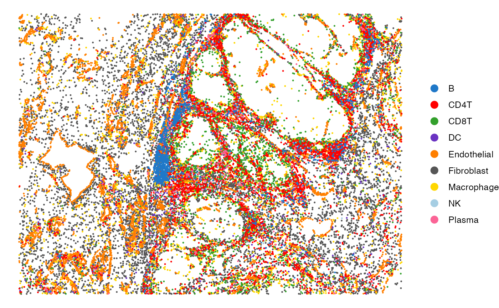
# Visualize the regions in the tissue
SpatialView(scmeta, by = "Region") + scale_color_brewer(type = "qual", palette = "Set1")
The SpatialView function can also be used to visualize continuous characteristics, such as the minimum distance of each single cell to tumor/stroma margin. Here, positive distances indicate cells located within the tumor region, while negative distances denote cells within the stroma.
# Visualize the distance to tumor margin
SpatialView(scmeta, by = "Dist2Interface") +
scale_colour_gradient2(low = "#5e3c99", high = "#e66101",
mid = "#d9d9d9", midpoint = 0) +
labs(color = "Distance to\ntumor margin")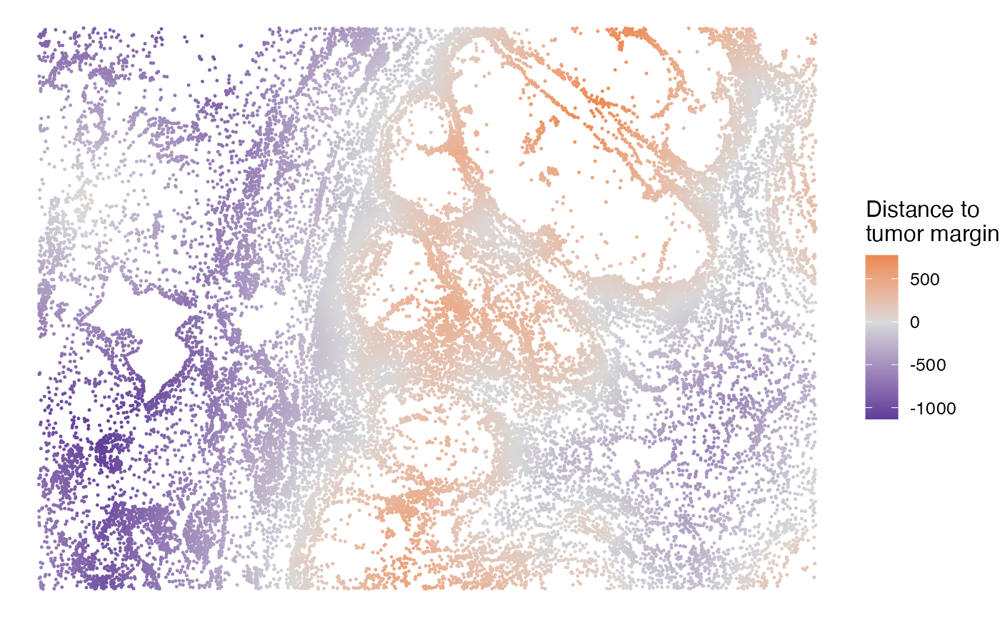
SE discovery using SpatialEcoTyper
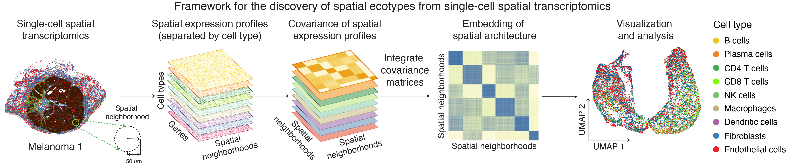
The SpatialEcoTyper function is designed to identify spatial ecotypes (SEs) from single-cell spatial transcriptomics data. The workflow begins by defining spatial neighborhoods (SNs) on a regular grid and constructing cell type–specific gene expression profiles (GEPs) for each SN. For each cell type, a similarity network is then generated based on these GEPs, where nodes represent SNs and edges denote their expression similarity. To integrate these networks across cell types, SpatialEcoTyper applies the Similarity Network Fusion (SNF) method, originally developed for multi-omics data integration (Wang et al., 2014). This yields a fused similarity network that captures shared spatial transcriptomic variation across cell types, enabling the identification of SEs through clustering.
Key arguments for SpatialEcoTyper
-
normdataA matrix representing normalized gene expression data, where rows correspond to genes and columns correspond to cells. -
metadataA data frame containing metadata associated with each cell. Must include spatial coordinates (e.g., X and Y) as well as cell type annotations. The row names must match the column names of thenormdata. -
outprefixCharacter string specifying the prefix for output file names. -
radiusNumeric specifying the radius (default: 50 µm) for defining spatial neighborhood. -
grid.sizeNumeric specifying the grid size for spatial discretization of coordinates. -
resolutionNumeric specifying the resolution for Louvain clustering (default: 0.5). -
nfeaturesInteger specifying the number of top variable features (default: 500) used for the analysis. -
min.cts.per.regionInteger specifying the minimum number of cell types (default: 2) required for a spatial neighborhood. -
iterationsInteger specifying the number of iterations (default: 10) for SNF analysis. -
ncoresInteger specifying the number of CPU cores to use for parallel processing.
You can type ?SpatialEcoTyper to visualize the full
manual.
## This step takes ~2 minutes to complete on macOS with an Apple M1 Pro chip and 16 GB memory.
se_results <- SpatialEcoTyper(normdata, scmeta,
outprefix = "Melanoma1_subset",
radius = 50, ncores = 2)Optimizing memory usage
For large single-cell spatial transcriptomics (ST) datasets with more
than 100,000 cells, the analysis can be both time- and memory-intensive.
To accelerate computation, you can increase the number of cores used
(ncores), but this will also increase memory
consumption.
If computational memory is limited, several strategies can help
reduce usage. One option is to increase the grid.size,
which decreases the number of spatial neighborhoods and can
substantially decrease memory usage. Another option is to reduce the
minibatch size and the number of cores
(ncores). However, the minimum memory requirement may still
remain high for very large datasets.
Interested in multicellular communities associated with specific cell types?
If you’re interested in investigating multicellular communities
associated with specific cell types, you can use the
filter.region.by.celltypes argument to limit the analysis
to spatial neighborhoods that contain at least one cell of the specified
type. For example, to identify SEs associated with CD8 T cells, you can
use the following command:
se_results <- SpatialEcoTyper(normdata, scmeta,
outprefix = "Melanoma1_subset",
radius = 50, ncores = 2,
filter.region.by.celltypes = c("CD8T"))Interested in regions with multiple cell types?
If you’re interested in regions composed of multiple cell types, you
can use the min.cts.per.region argument to restrict the
analysis to spatial neighborhoods containing at least the specified
minimum number of distinct cell types.
se_results <- SpatialEcoTyper(normdata, scmeta,
outprefix = "Melanoma1_subset",
radius = 50, ncores = 2,
min.cts.per.region = 2)SpatialEcoTyper result
When the outprefix is specified, the SpatialEcoTyper result will
be saved as a RDS file named
outprefix_SpatialEcoTyper_results.rds. The result can be
loaded into R using readRDS.
## drive_download(as_id("13T8IIbgk26sokFI8F3VqI4mvz3QIp3fT"), "Melanoma1_subset_SpatialEcoTyper_results.rds", overwrite = TRUE)
se_results <- readRDS("Melanoma1_subset_SpatialEcoTyper_results.rds")The SpatialEcoTyper result is a list that includes two key components:
- a Seurat object constructed from the fused network embedding of spatial neighborhoods, enabling the identification of spatial ecotypes through clustering.
- a data frame of the single-cell metadata, which includes the original single-cell metadata with spatial ecotype cluster annotations added.
# Extract the Seurat object and updated single-cell metadata
obj <- se_results$obj # A Seurat object
scmeta <- se_results$metadata # Single-cell meta data, with SE annotation added
head(scmeta)## X Y CellType CellTypeName
## HumanMelanomaPatient1__cell_3655 1894.706 -6367.766 Fibroblast Fibroblasts
## HumanMelanomaPatient1__cell_3657 1942.480 -6369.602 Fibroblast Fibroblasts
## HumanMelanomaPatient1__cell_3658 1963.007 -6374.026 Fibroblast Fibroblasts
## HumanMelanomaPatient1__cell_3660 1981.600 -6372.266 Fibroblast Fibroblasts
## HumanMelanomaPatient1__cell_3661 1742.939 -6374.851 Fibroblast Fibroblasts
## HumanMelanomaPatient1__cell_3663 1921.683 -6383.309 Fibroblast Fibroblasts
## Region Dist2Interface SE
## HumanMelanomaPatient1__cell_3655 Stroma -883.1752 SE3
## HumanMelanomaPatient1__cell_3657 Stroma -894.8463 SE6
## HumanMelanomaPatient1__cell_3658 Stroma -904.1115 SE6
## HumanMelanomaPatient1__cell_3660 Stroma -907.8909 SE6
## HumanMelanomaPatient1__cell_3661 Stroma -874.2712 SE1
## HumanMelanomaPatient1__cell_3663 Stroma -903.6559 SE3
table(scmeta$SE) ## The number of cells in each SE##
## SE0 SE1 SE2 SE3 SE4 SE5 SE6 SE7
## 4067 2480 6907 4297 3952 1232 1801 2244Note: Spatial EcoTyper employs stringent quality
control steps to exclude spatial neighborhoods with suboptimal gene
expression profiles, such as those with insufficiently detected genes
(min.feature parameter), insufficient cells
(min.cells parameter), and underrepresented cell types
(min.cts.per.region parameter). These low confidence
regions are marked as NA by the pipeline. While regions designated as NA
at one resolution (radius and grid.size
parameter) may be included at a lower resolution if the larger region
passes QC, we observed a negligible impact of different resolutions on
overall performance. By default, NA regions are removed from the output
to avoid confusion. To retain all cells in the single-cell meta data,
you can set dropcell = FALSE in the SpatialEcoTyper.
Embedding of spatial architecture
The embedding of spatial neighborhoods can be visualized using
standard Seurat
functions such as DimPlot and FeaturePlot.
These visualizations help to explore the spatial organization and
heterogeneity within the tissue.
Note: The embedding and clustering results differ slightly between Seurat v4 and v5. However, the overall clustering patterns remain largely consistent, with an Adjusted Rand Index (ARI) of 0.7 for the demonstration dataset. This consistency ensures that, despite minor variations, the key biological insights are preserved across versions.
Visualizing tumor/stroma regions in the embedding
DimPlot(obj, group.by = "Region") + scale_color_brewer(type = "qual", palette = "Set1")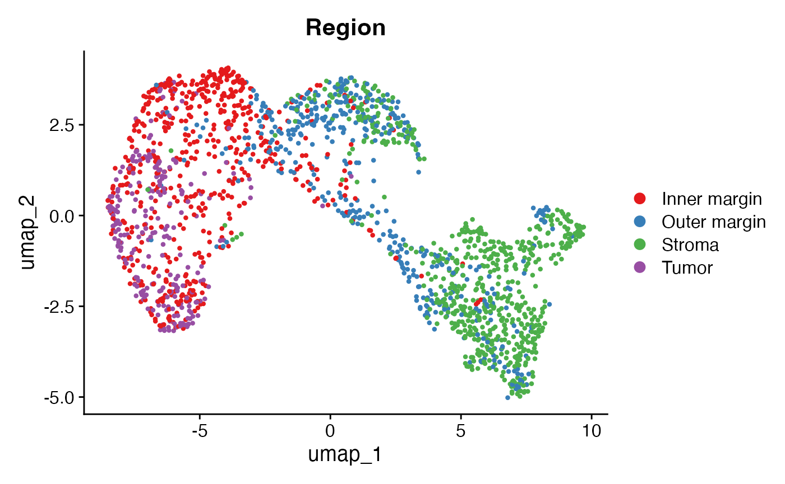
Visualizing the distance of SNs to tumor/stroma interface
This plot shows the distance of each SN to the tumor/stroma interface. Here, positive distances indicate SNs located within the tumor region, while negative distances denote SNs within the stroma.
FeaturePlot(obj, "Dist2Interface", min.cutoff = -600, max.cutoff = 600) +
scale_colour_gradient2(low = "#5e3c99", high = "#e66101", mid = "#d9d9d9", midpoint = 0)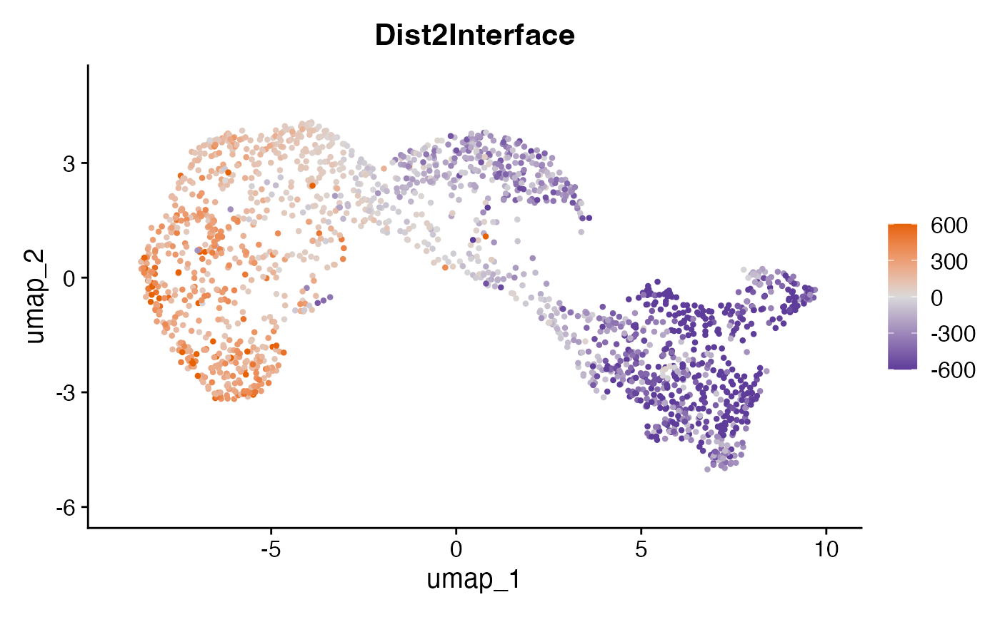
Visualizing spatial ecotypes in the embedding
This plot visualizes the SEs within the spatial embedding. Each SE represents a distinct spatial ecosystem with unique molecular and spatial characteristics, and may also differ in cell type composition.
DimPlot(obj, group.by = "SE") + scale_color_manual(values = pals::kelly()[-1])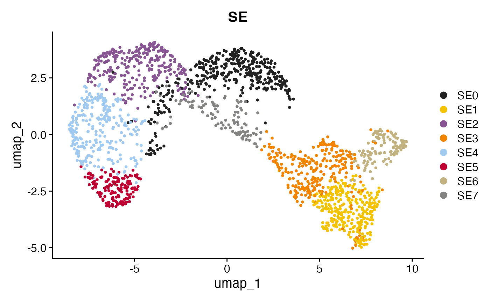
Visualizing the most abundant cell types in each SN
Here, we focus on visualizing the dominant cell types within each SN to highlight the characteristic cellular composition of different SEs.
DimPlot(obj, group.by = "CellType") +
scale_color_manual(values = pals::cols25())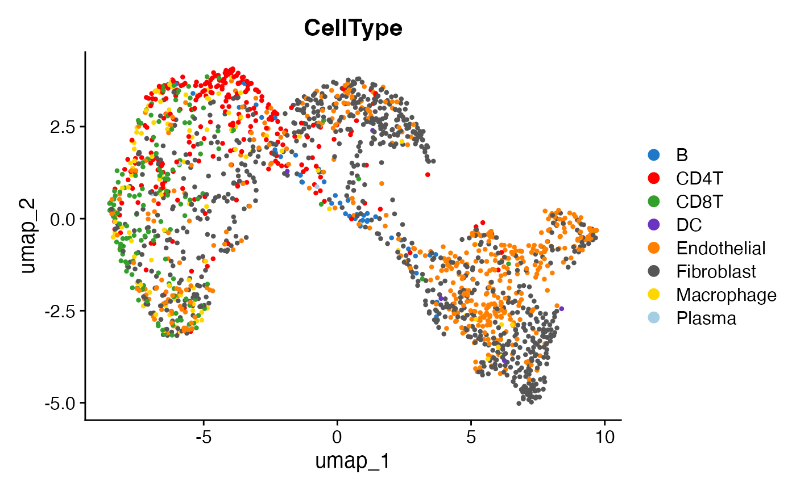
SE characteristics
Visualizing SEs in the tissue
The spatial distribution of SEs within the tissue can be visualized using the SpatialView function.
SpatialView(scmeta, by = "SE")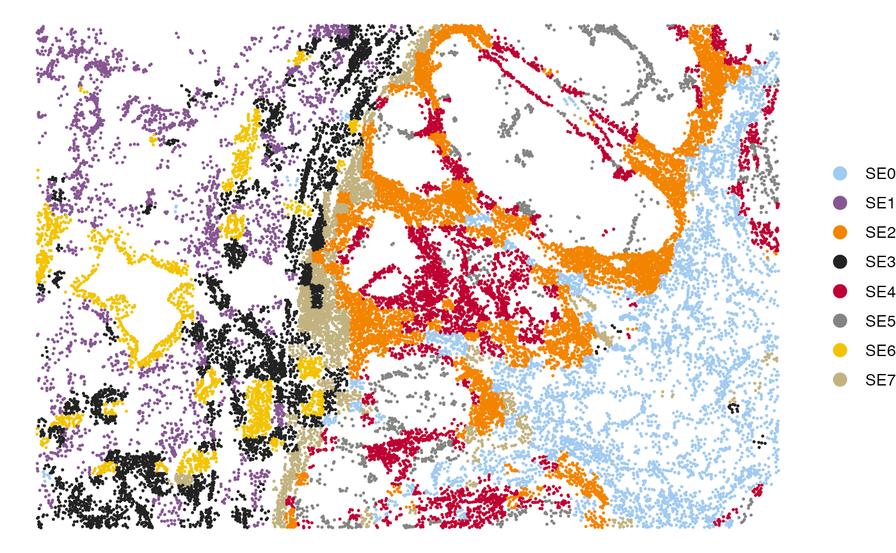
Visualizing the cell type composition of SEs
The bar plot below illustrates the cell type composition within each SE.
gg <- scmeta %>% filter(!is.na(SE)) %>% count(SE, CellType)
ggplot(gg, aes(SE, n, fill = CellType)) +
geom_bar(stat = "identity", position = "fill") +
scale_fill_manual(values = pals::cols25()) +
theme_bw(base_size = 14) + coord_flip() +
labs(y = "Cell type abundance")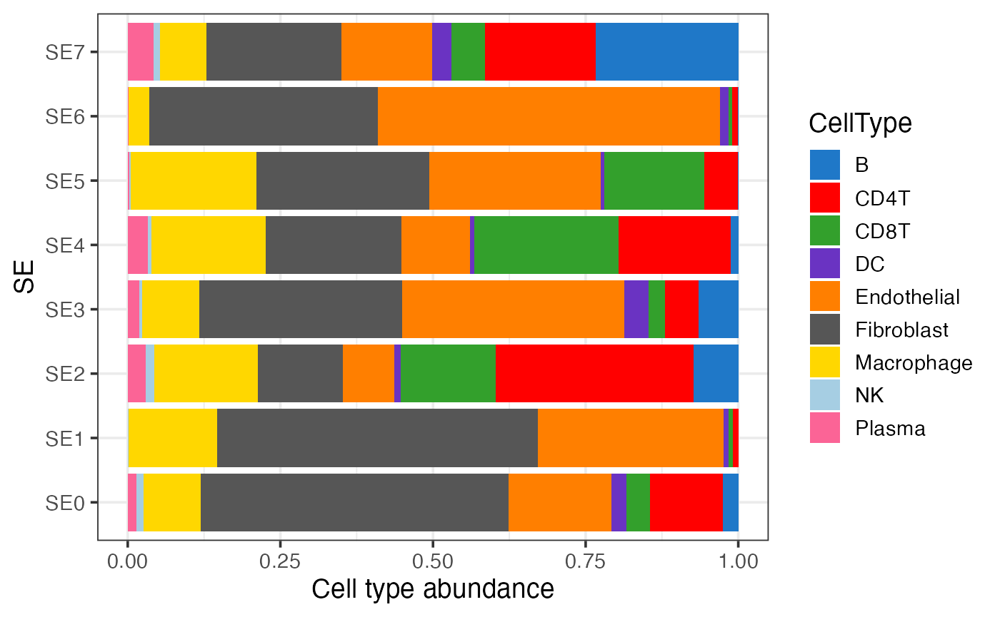
Visualizing the association between SEs and pre-annotated regions
This bar plot shows the enrichment of SEs in pre-defined regions (e.g., tumor and stroma).
gg <- scmeta %>% filter(!is.na(SE)) %>% count(SE, Region)
ggplot(gg, aes(SE, n, fill = Region)) +
geom_bar(stat = "identity", position = "fill") +
scale_fill_brewer(type = "qual", palette = "Set1") +
theme_bw(base_size = 14) + coord_flip() +
labs(y = "Fraction")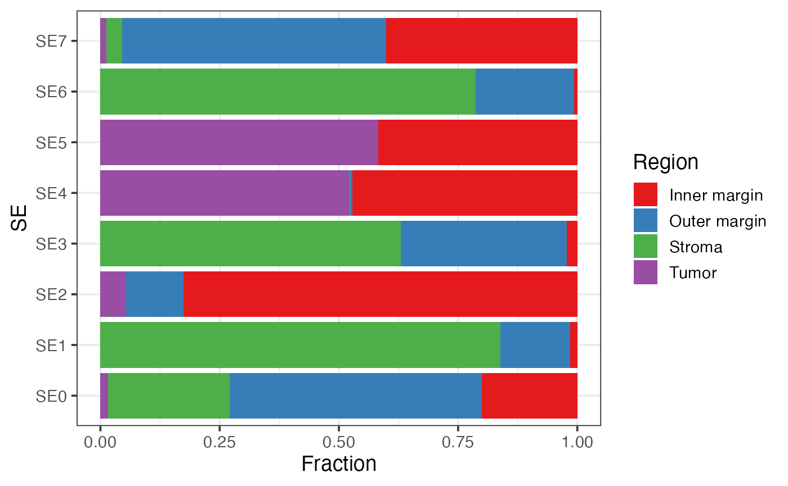
Visualizing the distance of SEs to tumor/stroma interface
This box plot visualizes the distribution of distances of SEs to the tumor/stroma interface. Positive distances indicate cells located within the tumor region, while negative distances denote cells within the stroma. The SEs are ordered by their median distance, highlighting their spatial localization relative to the tumor/stroma interface.
gg <- scmeta %>% filter(!is.na(SE))
## Order SEs by their distance to tumor/stroma interface
tmp <- gg %>% group_by(SE) %>% summarise(Mid = median(Dist2Interface)) %>% arrange(Mid) %>% pull(SE)
gg$SE = factor(gg$SE, levels = tmp)
ggplot(gg, aes(SE, Dist2Interface)) +
geom_boxplot() + theme_bw() + labs(y = "Distance to tumor/stroma interface (μm)")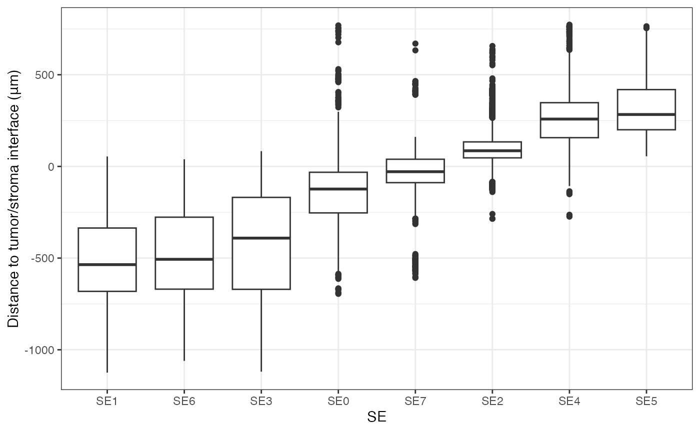
Identification of cell-type-specific SE markers
Differential expression analysis
To identify cell-type-specific SE markers, we can perform
differential expression analysis using the presto
package. Below is an example of how to identify fibroblast-specific
markers for each SE.
if(!"presto" %in% installed.packages()){
BiocManager::install("devtools")
devtools::install_github("immunogenomics/presto")
}
library("presto")
# Ensure the normalized data is aligned with the single-cell metadata
normdata = normdata[, rownames(scmeta)]
# Perform differential expression analysis for fibroblasts across SEs
idx = which(scmeta$CellType=="Fibroblast" & !is.na(scmeta$SE))
degs = wilcoxauc(normdata[, idx], scmeta$SE[idx])
# Filter for significant markers with positive log-fold change
degs = degs %>% filter(logFC>0 & pval<0.05) %>% arrange(desc(logFC))
head(degs)## feature group avgExpr logFC statistic auc pval
## 1 ACTA2 SE6 2.474779 2.098878 4006694 0.7945178 4.327192e-195
## 2 PLA2G2A SE1 2.138834 1.514224 7450658 0.8350914 0.000000e+00
## 3 PKM SE5 2.553626 1.311940 2341716 0.8605602 2.684889e-117
## 4 PLA2G2A SE3 1.786796 1.115139 7220261 0.7530508 2.353682e-242
## 5 FN1 SE4 3.050625 1.034756 4915868 0.7688155 2.080559e-150
## 6 PKM SE4 2.203188 1.014937 5178804 0.8099374 3.607553e-202
## padj pct_in pct_out
## 1 5.942677e-193 72.88889 31.86990
## 2 0.000000e+00 91.71779 34.22976
## 3 5.530871e-115 98.56734 82.24958
## 4 4.848585e-240 80.58865 35.54100
## 5 2.142976e-148 98.40909 88.21910
## 6 1.486312e-199 97.50000 81.18635Note: The MERSCOPE data used for SE discovery includes a limited number of genes. To enhance the analysis, you can extend the differential expression analysis to the whole transcriptome by aligning scRNA-seq data to the spatial transcriptomics data via CytoSPACE.
Visualizing the expression of cell state markers
Once you’ve identified potential markers, you can visualize their expression across SEs. Below is an example using the ACTA2 gene.
## Gene expression across all SEs
gg <- scmeta[idx, ]
gg$Expression <- normdata["ACTA2", idx]
ggplot(gg, aes(SE, Expression)) + geom_boxplot() +
theme_classic(base_size = 14) + ylab("ACTA2 expression")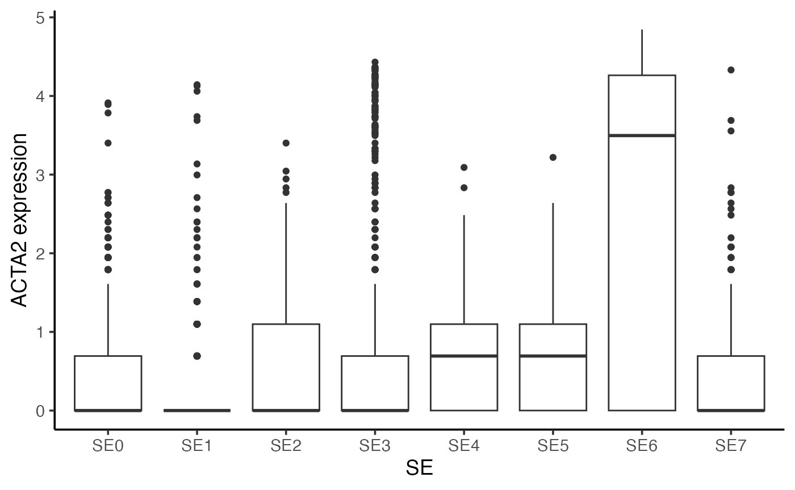
You can also visualize the expression of a marker (e.g., ACTA2) in the tissue.
## Visualize gene expression in spatial
gg <- scmeta
gg$Expression <- normdata["ACTA2", ]
SpatialView(gg, by = "Expression") + scale_color_viridis_c() +
labs(color = "ACTA2\nexpression")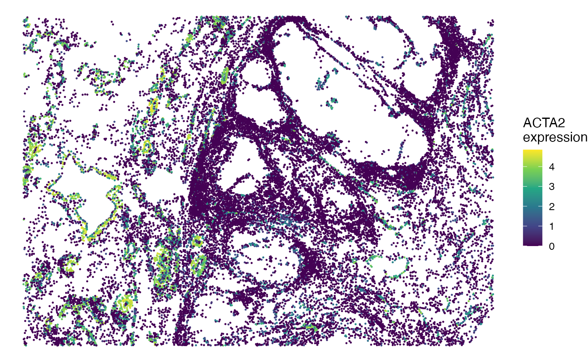
Session info
The session info allows users to replicate the exact environment and identify potential discrepancies in package versions or configurations that might be causing problems.
## R version 4.4.1 (2024-06-14)
## Platform: aarch64-apple-darwin20
## Running under: macOS 15.6.1
##
## Matrix products: default
## BLAS: /Library/Frameworks/R.framework/Versions/4.4-arm64/Resources/lib/libRblas.0.dylib
## LAPACK: /Library/Frameworks/R.framework/Versions/4.4-arm64/Resources/lib/libRlapack.dylib; LAPACK version 3.12.0
##
## locale:
## [1] en_US.UTF-8/en_US.UTF-8/en_US.UTF-8/C/en_US.UTF-8/en_US.UTF-8
##
## time zone: America/Los_Angeles
## tzcode source: internal
##
## attached base packages:
## [1] parallel stats graphics grDevices utils datasets methods
## [8] base
##
## other attached packages:
## [1] presto_1.0.0 Rcpp_1.0.13 SpatialEcoTyper_1.0.1
## [4] NMF_0.28 Biobase_2.64.0 BiocGenerics_0.50.0
## [7] cluster_2.1.6 rngtools_1.5.2 registry_0.5-1
## [10] RANN_2.6.2 Matrix_1.7-0 R.utils_2.12.3
## [13] R.oo_1.26.0 R.methodsS3_1.8.2 googledrive_2.1.1
## [16] data.table_1.16.0 Seurat_5.1.0 SeuratObject_5.0.2
## [19] sp_2.1-4 ggplot2_3.5.1 dplyr_1.1.4
##
## loaded via a namespace (and not attached):
## [1] RcppAnnoy_0.0.22 splines_4.4.1
## [3] later_1.3.2 tibble_3.2.1
## [5] polyclip_1.10-7 fastDummies_1.7.4
## [7] lifecycle_1.0.4 doParallel_1.0.17
## [9] pals_1.9 globals_0.16.3
## [11] lattice_0.22-6 MASS_7.3-60.2
## [13] magrittr_2.0.3 plotly_4.10.4
## [15] sass_0.4.9 rmarkdown_2.28
## [17] jquerylib_0.1.4 yaml_2.3.10
## [19] httpuv_1.6.15 glmGamPoi_1.16.0
## [21] sctransform_0.4.1 spam_2.10-0
## [23] spatstat.sparse_3.1-0 reticulate_1.39.0
## [25] mapproj_1.2.11 cowplot_1.1.3
## [27] pbapply_1.7-2 RColorBrewer_1.1-3
## [29] maps_3.4.2 zlibbioc_1.50.0
## [31] abind_1.4-5 GenomicRanges_1.56.1
## [33] Rtsne_0.17 purrr_1.0.2
## [35] GenomeInfoDbData_1.2.12 circlize_0.4.16
## [37] IRanges_2.38.1 S4Vectors_0.42.1
## [39] ggrepel_0.9.6 irlba_2.3.5.1
## [41] listenv_0.9.1 spatstat.utils_3.1-0
## [43] goftest_1.2-3 RSpectra_0.16-2
## [45] spatstat.random_3.3-1 fitdistrplus_1.2-1
## [47] parallelly_1.38.0 DelayedMatrixStats_1.26.0
## [49] pkgdown_2.1.0 DelayedArray_0.30.1
## [51] leiden_0.4.3.1 codetools_0.2-20
## [53] tidyselect_1.2.1 shape_1.4.6.1
## [55] farver_2.1.2 UCSC.utils_1.0.0
## [57] matrixStats_1.4.1 stats4_4.4.1
## [59] spatstat.explore_3.3-2 jsonlite_1.8.8
## [61] GetoptLong_1.0.5 progressr_0.14.0
## [63] ggridges_0.5.6 survival_3.6-4
## [65] iterators_1.0.14 systemfonts_1.1.0
## [67] foreach_1.5.2 tools_4.4.1
## [69] ragg_1.3.2 ica_1.0-3
## [71] glue_1.7.0 SparseArray_1.4.8
## [73] gridExtra_2.3 xfun_0.52
## [75] MatrixGenerics_1.16.0 GenomeInfoDb_1.40.1
## [77] withr_3.0.1 BiocManager_1.30.25
## [79] fastmap_1.2.0 fansi_1.0.6
## [81] digest_0.6.37 R6_2.5.1
## [83] mime_0.12 textshaping_0.4.0
## [85] colorspace_2.1-1 scattermore_1.2
## [87] tensor_1.5 dichromat_2.0-0.1
## [89] spatstat.data_3.1-2 utf8_1.2.4
## [91] tidyr_1.3.1 generics_0.1.3
## [93] S4Arrays_1.4.1 httr_1.4.7
## [95] htmlwidgets_1.6.4 uwot_0.2.2
## [97] pkgconfig_2.0.3 gtable_0.3.5
## [99] ComplexHeatmap_2.20.0 lmtest_0.9-40
## [101] XVector_0.44.0 htmltools_0.5.8.1
## [103] dotCall64_1.1-1 clue_0.3-65
## [105] scales_1.3.0 png_0.1-8
## [107] spatstat.univar_3.0-1 knitr_1.48
## [109] rstudioapi_0.16.0 reshape2_1.4.4
## [111] rjson_0.2.22 nlme_3.1-164
## [113] curl_5.2.2 cachem_1.1.0
## [115] zoo_1.8-12 GlobalOptions_0.1.2
## [117] stringr_1.5.1 KernSmooth_2.23-24
## [119] miniUI_0.1.1.1 desc_1.4.3
## [121] pillar_1.9.0 grid_4.4.1
## [123] vctrs_0.6.5 promises_1.3.0
## [125] xtable_1.8-4 evaluate_0.24.0
## [127] cli_3.6.3 compiler_4.4.1
## [129] rlang_1.1.4 crayon_1.5.3
## [131] future.apply_1.11.2 labeling_0.4.3
## [133] plyr_1.8.9 fs_1.6.4
## [135] stringi_1.8.4 viridisLite_0.4.2
## [137] deldir_2.0-4 gridBase_0.4-7
## [139] munsell_0.5.1 lazyeval_0.2.2
## [141] spatstat.geom_3.3-2 RcppHNSW_0.6.0
## [143] patchwork_1.2.0 sparseMatrixStats_1.16.0
## [145] future_1.34.0 shiny_1.9.1
## [147] highr_0.11 SummarizedExperiment_1.34.0
## [149] ROCR_1.0-11 gargle_1.5.2
## [151] igraph_2.0.3 bslib_0.8.0